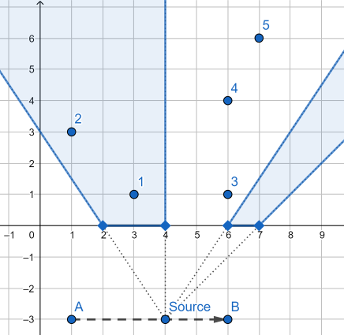

[Codeforces 1016.E] Rest In The Shades（二分，简单几何）
E. Rest In The Shades
time limit: per test2 seconds
memory limit: per test256 megabytes
input:standard input
output:standard output
There is a light source on the plane. This source is so small that it can be represented as point. The light source is moving from point $(a,s_y)$ to the $(b,s_y)$ $(s_y<0)$ with speed equal to $1$ unit per second. The trajectory of this light source is a straight segment connecting these two points.
There is also a fence on $OX$ axis represented as $n$ segments $(l_i,r_i)$ (so the actual coordinates of endpoints of each segment are $(l_i,0)$ and $(r_i,0)$. The point $(x,y)$ is in the shade if segment connecting $(x,y)$ and the current position of the light source intersects or touches with any segment of the fence.

You are given $q$ points. For each point calculate total time of this point being in the shade, while the light source is moving from $(a,s_y)$ to the $(b,s_y)$.
Input
First line contains three space separated integers $s_y$, $a$ and $b$ $(-10^9≤s_y<0$, $1≤a<b≤10^9)$ — corresponding coordinates of the light source.
Second line contains single integer $n$ $(1≤n≤2\cdot 10^5)$ — number of segments in the fence.
Next $n$ lines contain two integers per line: $l_i$ and $r_i$ $(1≤l_i<r_i≤10^9, r_{i-1}<l_i)$ — segments in the fence in increasing order. Segments don’t intersect or touch each other.
Next line contains single integer $q$ $(1≤q≤2\cdot 10^5)$ — number of points to check.
Next $q$ lines contain two integers per line: $x_i$ and $y_i$ $(1≤x_i,y_i≤10^9)$ — points to process.
Output
Print $q$ lines. The $i$-th line should contain one real number — total time of the $i$-th point being in the shade, while the light source is moving from $(a,s_y)$ to the $(b,s_y)$. The answer is considered as correct if its absolute of relative error doesn’t exceed $10^{-6}$.
Example
| input | output |
|---|---|
| -3 1 6 2 2 4 6 7 5 3 1 1 3 6 1 6 4 7 6 |
5.000000000000000 3.000000000000000 0.000000000000000 1.500000000000000 2.000000000000000 |
Note
The 1-st point is always in the shade;
the 2-nd point is in the shade while light source is moving from $(3,-3)$ to $(6,-3)$;
the 3-rd point is in the shade while light source is at point $(6,-3)$.
the 4-th point is in the shade while light source is moving from $(1,-3)$ to $(2.5,-3)$ and at point $(6,-3)$;
the 5-th point is in the shade while light source is moving from $(1,-3)$ to $(2.5,-3)$ and from $(5.5,-3)$ to $(6,-3)$;
解题思路
官方题解说的很清楚了：
Let’s calculate the answer for a fixed point $P$. If you project with respect of $P$ each segment of the fence to the line containing light source you can see that the answer is the length of intersection of fence projection with segment $(A,B)$ of the trajectory light source.
Key idea is the fact that the length of each fence segment is multiplied by the same coefficient $k=\frac{P_y+|s_y|}{P_y}$.
On the other hand, fence segments whose projections lie inside $(A,B)$ form a subsegment in the array of segments, so its total length can be obtained with partial sums. And at most two fence segment are included in the answer partially, their positions can be calculated with lower_bound if you project points $A$ and $B$ on $OX$ axis.
So now you can answer the query with $O(\log n)$ time (and quite small hidden constant) and resulting complexity is $O(n+q\log n)$
具体来说：
对于每个点 $P(P_x,P_y)$，连接 $PA$ 交 $x$ 轴于 $A’$，连接 $PB$ 交 $y$ 轴于 $B’$，则答案就是 $A’B’$ 内的篱笆长度乘以系数 $k=\frac{P_y+|s_y|}{P_y}$
问题变成了如何快速求出 $A’B’$ 内的篱笆长度。
首先可以二分找出 $A’B’$ 内的第一个完整篱笆和最后一个完整篱笆的编号（lower_bound 就可以搞定），然后利用前缀和 $O(1)$ 求出这两个篱笆之间的总长度，在加上一头一尾不完整的篱笆的长度即可。
前缀和求出绿色部分长度，在单独处理蓝色部分长度。
坑：ans 变量要开 long double，而 long double 用 printf 输出的方式挺迷的（最后是用 %f 输出 (double)ans 才能在 codeforces 上正确输出）
复杂度 $O(n+q\log n)$
Code
1 |
|